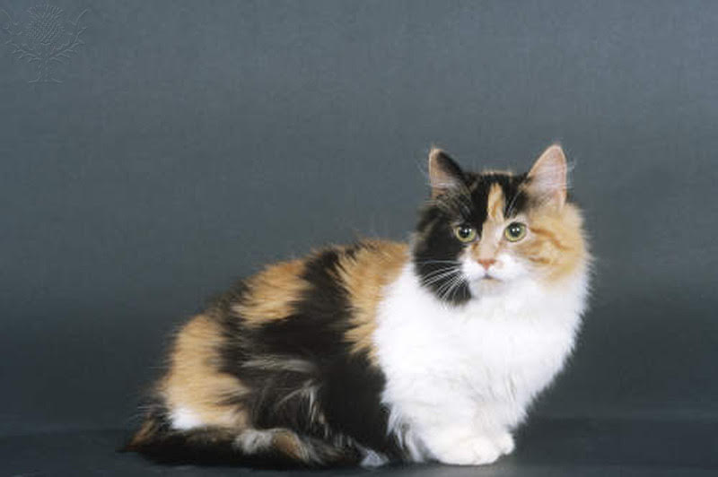

hey, this is my page all about these beloved little creatures. they may look a little weird as babies, but i swear they're cute. here's are 2 little examples of grown calico cats.

these little cuddly balls of fur are newborn calico cats. did you know that baby calico cats have 2 X chromosomes (one thats orange/yellow and the other being brown/black).
these 2 chromosomes will at some point activate during the development of the embryo, giving the unique color pattern that calico cats show off.